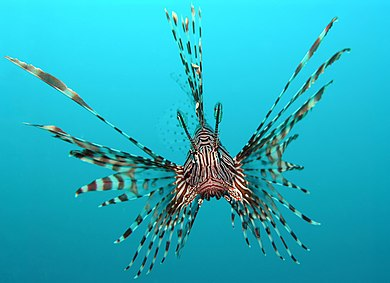

Ри́би (Pisces) — парафілетична група водних хребетних тварин, зазвичай холоднокровних (точніше екзотермних) із вкритим лусками тілом та зябрами, наявними протягом всього життя. Активно рухаються за допомогою плавців (часто видозмінених) або руху всього тіла. Риби поширені як у морських, так і в прісноводних середовищах, від глибоких океанічних западин до гірських струмків. Риби мають велике значення для всіх водних екосистем як складова частина харчових ланцюгів та велике економічне значення для людини через споживання їх у їжу. Люди як виловлюють диких риб, так і розводять їх у створених з цією метою господарствах.
На ранніх етапах створення біологічної систематики риб класифікували до одного таксона, проте через поліфілетичність групи, «риби» більше не розглядаються як таксономічна група. Через великий спектр часом взаємовиключних анатомічних та фізіологічних особливостей організмів — представників цієї групи, її визначення є досить нечітким.
Риби є найбільш примітивними таксонами підтипу Черепні (Craniata). Цей підтип раніше називався «Хребетні» (Vertebrata), але в 1981 році P. Janvier показав, що найбільш примітивним членам цього таксона притаманний череп, але не притаманні (або притаманні в рудиментарній формі) хребці. Отже, цей підтип об'єктивніше буде називати Craniata. Назва Vertebrata зараз використовується для визначення підмножини Craniata, що, разом з черепом, мають також і хребцеві елементи.
Дві нещодавно (в 1999 р.) знайдені в Китаї викопні прариби стали найдавнішими відомими істотами надкласу Pisces — ці знахідки вчені датують раннім Кембрієм, близько 530 мільйонів років тому (використану тут і далі систему палеонтологічного датування див. у статті «Геохронологічна таблиця»). Ці ранні форми є прямими або опосередкованими попередниками взагалі майже всіх хребетних, і їхня знахідка свідчить, що хребетні брали участь у «вибуху» біорізноманіття тканинних організмів (Eumetazoa) в Кембрії. Обидві викопні рештки є невеликими за розміром (25 та 28 міліметрів), і містять хрящовий череп, від п'яти до дев'яти пар зябрових міхурів, велике серце позаду останньої пари зябрових міхурів, нотохорд, зигзагоподібні блоки м'язів (міомери) та спинний плавець (одна з двох знахідок), підтримуваний плавцевими променями. Одна з істот, Myllokunmingia, визнана загальним попередником всіх черепних, окрім міксин. Інша істота, Haikouichthys, визначена як близький родич міног. На відміну від більшості інших безщелепних риб, ці ранні форми не мали луски, або захисту зі шкіряних кісткових пластин.
Інші нещодавні палеонтологічні знахідки свідчать, що Черепні та Хребетні були досить різноманітними вже в Ордовику (450 мільйонів років тому), і серед них були як безщелепні форми (типу сучасних міног), так і щелепні. Незважаючи на наявність щелепних форм вже в Ордовику, безщелепні риби були панівною формою аж до Силурійського періоду.
Зовнішні покриви
За незначними винятками, зовнішні покриви риб представлені шкірою з лускою. У формуванні луски беруть участь як зовнішні, так і внутрішні шари шкіри. Хрящові риби мають плакоїдну луску, що гомологічна зубам всіх хребетних; заходячи в рот, плакоїдні луски, власне, і перетворюються на зуби в акул та скатів. Структура плакоїдної луски цілком спільна із структурою зубів: вона складається із дентину, який формує основу, а зверху вкрита емаллю. За хімічним складом ці дентин і емаль не відрізняються, наприклад, від дентину й емалі зубів людини. Втрачені плакоїдні луски не поновлюються, але при зростанні риби їхня кількість збільшується. У деяких хрящових риб (наприклад, у чорноморського катрана) плакоїдні луски можуть перетворюватись у великі колючки. Костистим рибам притаманні декілька різних типів луски.
Ганоїдна луска наявна в найбільш примітивних з променеперих риб, скажімо, в осетрових. Вона сформована костяними платівками, що зверху вкриті шаром схожої на дентин речовини ганоїдін; часто така луска (або, як її ще називають, «жучки») вкривають тіло риби суцільним захисним панциром, як в родинах Багатоперові (Polypteridae) та Панцирникові (Lepisosteidae). Для викопних кистеперих і дводишних риб, а також для сучасних кистеперих риб, характерна космоїдна луска, зовнішня поверхня якої утворена шаром косміна (звідки походить назва), а поверх нього — дентину; космін підстилається шаром губчастої кістки; філогенетично ця луска являє собою кілька зрослих плакоїдних лусок. У сучасних видів кистеперих і двоякодихаючих риб зовнішній дентиновий та внутрішній губчастий шари поступово редукуються — у сучасних видів роду Латимерія на поверхні луски збереглися лише поодинокі бугорки дентину. Луска справжніх костистих риб називається еласмоїдною і поділяється на ктеноїдну (зубчасту) й циклоїдну (округлу), на основі форми зовнішньої кромки. На відміну від більшості підвидів плакоїдних та ганоїдних лусок, циклоїдні та ктеноїдні розташовані так, що передні накладаються на задні, а самі луски анатомічно є тонкими кістковими платівками; останнім часом було встановлено, що гребінчаста поверхня ктеноїдної луски покращує гідродинамічні властивості риб.